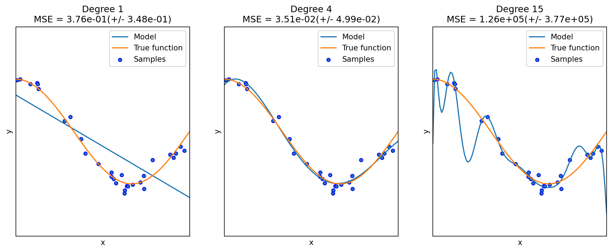

1 What is Statistical Learning?
1.1 Introduction
Statistical learning studies how to use data to understand relationships and make predictions.
In supervised learning, a common abstract model is
\[ Y = f(X) + \varepsilon, \]
where:
- \(X\) represents features;
- \(Y\) represents the response;
- \(f\) is the underlying relationship;
- \(\varepsilon\) represents random noise or unexplained variation.
The main objective is to estimate the unknown function \(f\) using observed data.
More broadly, modern statistical learning is fundamentally about learning patterns that generalize well to unseen data.
Depending on the objective, statistical learning problems can be viewed from several different perspectives.
| Task | Main Question |
|---|---|
| Prediction | What will happen? |
| Inference | Which variables matter? |
| Causality | What happens if we intervene? |
- Prediction mainly focuses on predictive performance and generalization. A common formulation is \[ \hat f(x) \approx \mathbb{E}[Y \mid X=x]. \]
- Inference focuses on understanding relationships between variables and often relies on tools such as confidence intervals and hypothesis testing.
- Causality studies intervention effects and is often written as \[ \mathbb{E}[Y \mid \text{do}(X=x)]. \]
- Good training performance does not imply good generalization.
- Good prediction does not imply valid inference.
- Association does not imply causation.
In this course, we will primarily focus on prediction and generalization rather than formal statistical inference.
1.2 Types of Learning
Statistical learning problems can be divided into several major categories depending on the available data and learning objective.
We will mainly focus on supervised learning in this course, with some topics from unsupervised learning.
1.2.1 Supervised Learning
In supervised learning, we observe both predictors \(X\) and response \(Y\).
The goal is to predict or explain the response, such as house price prediction, spam detection, medical diagnosis, etc..
Supervised learning is usually divided into two major tasks:
- regression, where the response is quantitative;
- classification, where the response is categorical.
Example 1.1
- predicting salary is a regression problem;
- predicting whether a tumor is benign or malignant is a classification problem.
1.2.2 Unsupervised Learning
In unsupervised learning, we observe predictors \(X\) but no response \(Y\).
The goal is to discover hidden structure in the data, such as clustering, dimensionality reduction, embedding learning, etc..
1.2.3 Reinforcement Learning
In reinforcement learning, an agent interacts with an environment and learns through rewards and penalties, such as robotics, game playing, recommendation systems, etc..
1.3 Types of Data
Machine learning methods are strongly connected to data structure, and different data types often require different modeling strategies.
This course mainly focuses on tabular data, which is the classical setting in statistics and applied machine learning.
1.3.1 Tabular Data
Tabular data is one of the most common data formats in statistical learning. It is typically represented as
\[ X \in \mathbb{R}^{n \times p}, \]
where:
- \(n\) is the number of observations;
- \(p\) is the number of predictors.
Example:
| Age | Income | Balance | Student | Default |
|---|---|---|---|---|
| 23 | 50000 | 1200 | Yes | No |
| 45 | 90000 | 3000 | No | Yes |
In tabular data:
- rows represent observations;
- columns represent variables or features.
For supervised learning, datasets usually contain:
- a feature matrix \(X\);
- a target variable \(y\).
For unsupervised learning, we typically observe only the feature matrix \(X\).
Since this course mainly focuses on tabular data, we will usually treat:
\[ X \in \mathbb{R}^{n \times p}, \qquad y \in \mathbb{R}^n. \]
The key feature of tabular data is NOT merely the matrix representation. More importantly, each column corresponds to a variable with its own semantic meaning, such as age, income, blood pressure, or transaction count.
Tabular data is particularly well suited for methods such as linear models and tree-based models. Therefore, these model families will be the main focus of this course.
1.3.2 Other Types of Data
Besides tabular data, many machine learning problems involve other data formats. We briefly mention several common examples that appear in modern learning tasks.
Image data contains spatial structure, meaning nearby pixels are highly related.
Modern image models frequently use:
- convolutional neural networks,
- vision transformers.
A central goal is to extract meaningful visual patterns such as edges, textures, shapes, and objects.
Text data contains sequential and contextual structure. Modern NLP is largely based on transformers and large language models.
Time series data is ordered over time such as stock prices, weather data and sensor measurements.
Graph data represents relationships between objects, such as social networks, citation networks, molecular structures.
Modern graph learning often uses graph neural networks.
1.4 Generalization and Model Complexity
1.4.1 Training Error and Test Error
Classical regression focuses heavily on checking model assumptions, such as independence of errors, constant variance, approximate normality. These assumptions are especially important for formal inference, including confidence intervals and hypothesis testing.
In statistical learning, however, the primary goal is often predictive performance rather than formal inference. As a result, diagnostic tools still remain useful, but they usually play a secondary role. Their main purpose is often to detect serious issues such as strong nonlinearity, influential observations, data quality problems, severe model misspecification.
The central question becomes: How well does the model predict new observations?
Definition 1.1 (Training Error and Test Error)
- The training error measures how well a model fits the training data.
- The test error measures prediction error on new observations not used to fit the model.
For example, suppose we evaluate a regression model using mean squared error (MSE).
The training MSE measures fit on the observed training sample, while the test MSE measures prediction performance on new data drawn from the same population.
A model may achieve extremely small training error while still performing poorly on unseen data. This happens because the model begins fitting random noise rather than the underlying signal.
Definition 1.2 (Overfitting) Overfitting occurs when a model fits the training data very closely but fails to generalize well to new data. In this case, the model captures random noise or idiosyncrasies in the training sample rather than the underlying relationship.
Model selection methods attempt to balance model complexity and prediction accuracy in order to avoid overfitting.
1.4.2 Bias–Variance Tradeoff
A central idea behind generalization is the bias–variance tradeoff.
Suppose
\[ Y=f(X)+\varepsilon, \qquad \Var(\varepsilon)=\sigma^2. \]
For a fitted estimator \(\hat f\), the test mean squared error at \(x_0\) satisfies
\[ \Exp\qty[(Y_0-\hat f(x_0))^2]= \operatorname{Bias}^2(\hat f(x_0)) + \Var(\hat f(x_0)) + \sigma^2. \]
The three terms represent:
- bias: systematic modeling error: \(\operatorname{Bias}(\hat f(x))=\Exp[\hat f (x)]-f(x)\). It measures the systematic difference between the average prediction and the true underlying function;
- variance: sensitivity to the training sample: \(\operatorname{Var}(\hat f(x))\). It measures how much the fitted model changes when the training data changes. Highly flexible models often have larger variance;
- irreducible error: \(\sigma^2\). This represents random noise or variability in the data generation process that cannot be explained or removed, even with the true model.
Roughly speaking, as model flexibility increases:
- training error usually decreases;
- test error often first decreases and then increases.
Model selection aims to balance these two effects in order to achieve good generalization performance.
Classical regression often estimates expected test error indirectly using only the training data.
Some commonly used criteria are:
- AIC (Akaike Information Criterion),
- BIC (Bayesian Information Criterion),
- Mallows’ \(C_p\).
These criteria reward good fit while penalizing excessive model complexity.
Although they are useful for model comparison, they still rely on approximations derived from the training sample.
1.4.3 Underfit vs Overfit
Bias and variance are closely related to underfit and overfit.
Roughly speaking, underfit means the model is not sufficient to fit the training samples, and overfit means that the models learns too many noise from the data. In many cases, high bias is related to underfit, and high variance is related to overfit.
The following example is from the sklearn guide. Although it is a polynomial regression example, it grasps the key idea of underfit and overfit.
